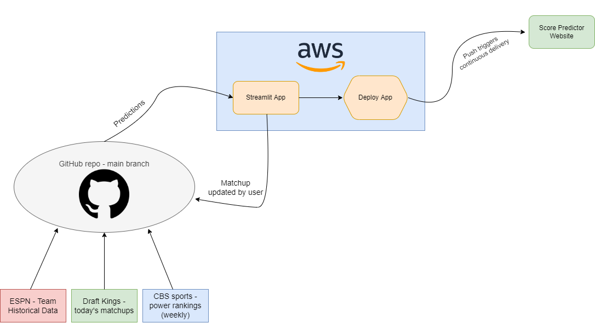
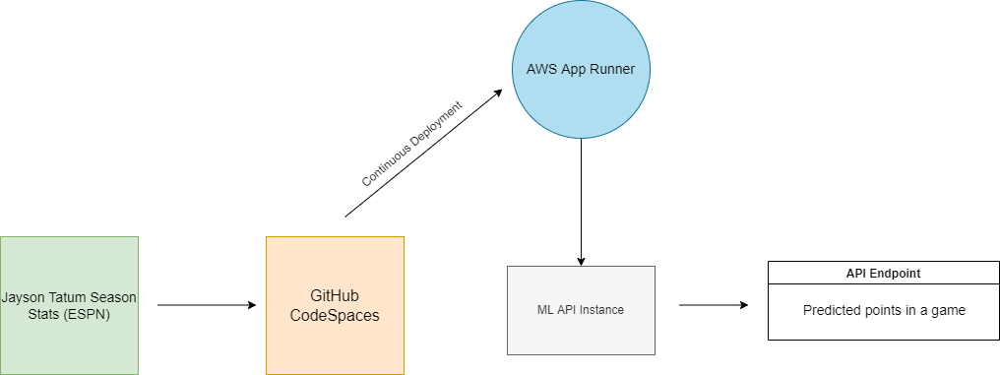
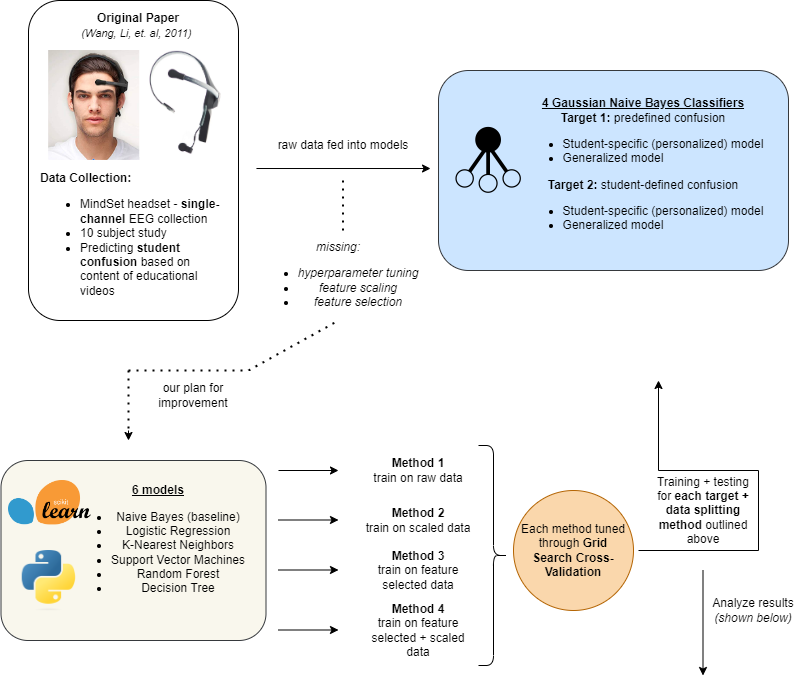

Building scalable data pipelines and machine learning solutions. Currently working at Frontier Communications, specializing in ETL processes, cloud migration, and predictive analytics.
Passionate about data, machine learning, and building innovative solutions
I'm currently working as a data engineer/data scientist at Frontier Communications in Tampa, FL. I specialize in developing and maintaining ETL scripts in SQL Server, migrating data to Databricks, and building churn ML models. I've found my passion in data engineering and infrastructure.
In May 2023, I received my MS in Computer Engineering from Duke University, where I gained deep understanding of computer systems, algorithms, and machine learning. I've worked on numerous projects exploring the intersection of data, ML, and DevOps/automation.
Professional journey and key achievements
Developing and maintaining ETL scripts in SQL Server, migrating data to Databricks environment, and building churn ML models for predictive analytics.
Conducted data analytics work for the NBA team, analyzing player performance and team statistics to support coaching and management decisions.
Focused on computer systems, algorithms, and machine learning. Completed projects in EEG signal processing, computer vision, and cloud computing.
A showcase of my technical work and innovations

Streamlit app that automatically pulls newest data, predicts on it, and serves betting predictions. Utilizes GitHub Actions for CI/CD to AWS EC2.

FastAPI application that predicts Jayson Tatum's points per game based on continuously updated data from ESPN. Deploys automatically to AWS AppRunner.

Enhanced EEG classifier for detecting student confusion in online learning. Improved model performance by 27% through rigorous feature selection and hyperparameter optimization.
Web application that allows users to upload images and receive classification predictions using pre-trained deep learning models via AWS SageMaker.
Command line tool that takes Hugging Face summarizer models, deploys them to AWS SageMaker, and queries them for inference. Built with Python, Bash, and Bashly.
CLI built in Rust and Bash that allows you to provision custom clusters in Databricks using the Databricks REST API.
Let's connect and discuss opportunities
alex.bzdel@gmail.com
linkedin.com/in/alexbzdel
github.com/abzdel